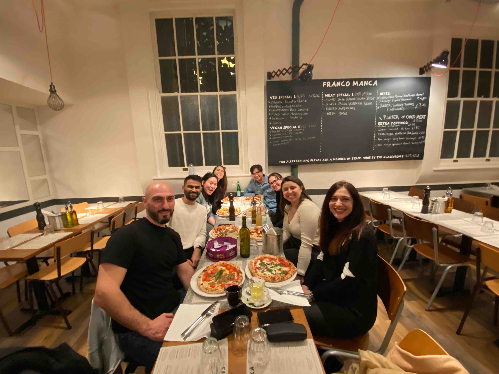

Computer Vision Engineer - Summary
-
Building the MVP – Facilitating to Partnership with Leading French Company - Etam Group
- Led research, development, and successful deployment of Deep Learning solutions including Image classification, Segmentation, Object and Key-point Detection, and NeRFs.
- Product owner of deep learning models in production. Proficiently managed and semi-automated deployment ensuring seamless integration with existing systems using AWS/GCP, GitHub Actions and Torch Serve.
- Lead engineer responsible for core contributions and maintenance of the core codebase, showcasing outstanding expertise in architecting projects, designing tests, conducting code reviews, setting up CI/CD pipelines and writing efficient code.
- Enhanced productivity of various projects by successfully implementing libraries related to computer vision, 2D graphics and cloud-agnostic services.
- Optimized CPU inference speed by ~85% and memory reduction by >3x while maintaining accuracy through model architecture changes and quantize aware training for segmentation tasks.
- Designed and implemented scaling logic to effectively handle fluctuations in user traffic, while simultaneously optimizing compute costs for maximum efficiency.
- Engineered a multi-threading solution to optimize Machine Learning inference requests and improve product performance by 40%.
Improved User Experience through Performance Enhancements